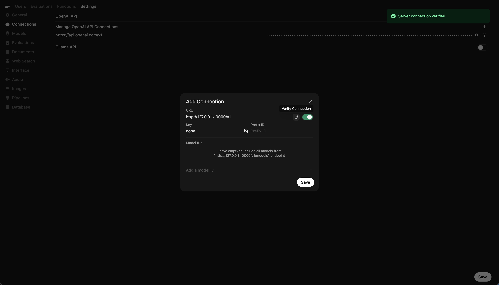
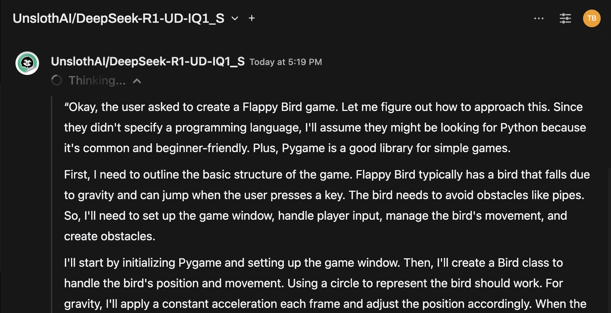

🦙Star com llama.cpp
Visão geral
O Nullcore torna simples e flexível conectar e gerenciar um servidor LLAMA.CPP local para executar modelos de linguagem eficientes e quantizados. Se você compilou a llama.cpp ou está usando binários pré -compilados, este guia o levará a como:
- Configure seu servidor llama.cpp
- Carregar modelos grandes localmente
- Integrar -se ao Nullcore para uma interface perfeita
Vamos começar!
Etapa 1: instale llama.cpp
Para executar modelos com llama.cpp, você precisa primeiro do servidor llama.cpp instalado localmente.
Você pode:
- Baixe binários pré -construídos
- 🛠️ ou construí -lo a partir da fonte seguindo oInstruções oficiais de construção
Após a instalação, verifique se Certifique -se dellama-serverestá disponível no caminho do sistema local ou tome nota de sua localização.
Etapa 2: Baixe um modelo suportado
Você pode carregar e executar vários LLMs quantizados em formato de GGUF usando llama.cpp. Um exemplo impressionante é o modelo Deepseek-R1 de 1,58 bit otimizado pela UNSLOTHAI. Para baixar esta versão:
- Visite oRepositório Deepseek-R1 não lotado em abraçar o rosto
- Faça o download da versão quantizada de 1,58 bits-cerca de 131 GB.
Como alternativa, use o Python para baixar programaticamente:
# pip install huggingface_hub hf_transfer
dehuggingface_hubimportarSnapshot_download
Snapshot_download
repo_id "Unsloth/Deepseek-R1-GGUF", Assim,
LOCAL_DIR "Deepseek-R1-GGUF", Assim,
allow_patterns [["*Ud-iq1_s*", Assim, # Baixe apenas uma variante de 1,58 bits
Isso vai baixar os arquivos do modelo em um diretório como:
Deepseek-R1-GGUF/
└── Deepseek-R1-UD-IQ1_S/
├── Deepseek-R1-UD-IQ1_S-00001-O-00003.GGUF
├── Deepseek-R1-UD-IQ1_S-00002-O-00003.GGUF
└── Deepseek-R1-UD-IQ1_S-00003-de-00003.GGUF
📍 Acompanhe o caminho completo para o primeiro arquivo GGUF - você precisará dele na Etapa 3.
Etapa 3: sirva o modelo com llama.cpp
Inicie o servidor de modelos usando o binário do servidor llama. Navegue até a pasta llama.cpp (por exemplo, build/bin) e execute:
./llama-server \
---model /your/full/path/to/deepseek-r1-ud-iq1_s-00001-of-00003.gguf \
--port 10000 \
-CTX 1024 \
--n-GPU-camadas 40
🛠️ Ajuste os parâmetros para se adequar à sua máquina:
- -Modelo: caminho para o seu arquivo .gguf modelo
- --port: 10000 (ou escolha outra porta aberta)
- -CTX-Size: Comprimento do contexto do token (pode aumentar se a RAM permitir)
- --n-GPU-camadas: camadas descarregadas para GPU para um desempenho mais rápido
Depois que o servidor é executado, ele exporá uma API local compatível com o OpenAI em:
http://127.0.0.1:10000
Etapa 4: conectar llama.cpp para abrir webui
Para controlar e consultar seu modelo em execução localmente diretamente do Nullcore:
- Abrir webui aberto em seu navegador
- Vá para ⚙️ Configurações do administrador → Conexões → Conexões OpenAI
- Clique em ➕ Adicione conexão e digite:
- URL:
http://127.0.0.1:10000/v1
(Ou usehttp://host.docker.internal:10000/v1Se estiver executando webui dentro do Docker) - Chave da API:
none(deixe em branco)
💡 Depois de salvo, o Nullcore começará a usar o servidor local LLAMA.CPP como um back -end!

Dica rápida: experimente o modelo via interface de bate -papo
Depois de conectado, selecione o modelo no menu Nullcore Chat e comece a interagir!

Você está pronto para ir!
Uma vez configurado, o Nullcore facilita:
- Gerencie e alterne entre modelos locais servidos por llama.cpp
- Use a API compatível com o OpenAI, sem nenhuma chave necessária
- Experimente modelos enormes como Deepseek-R1-diretamente da sua máquina!
🚀 Divirta -se experimentando e construindo!